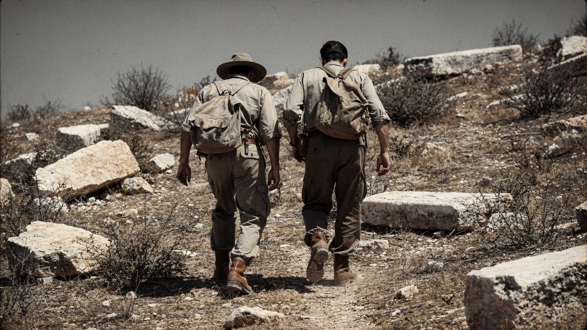
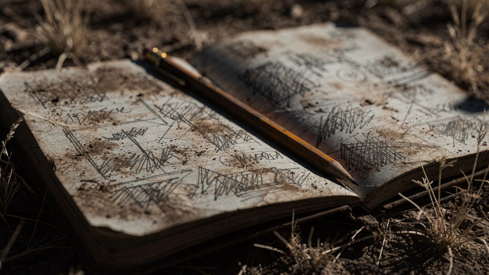
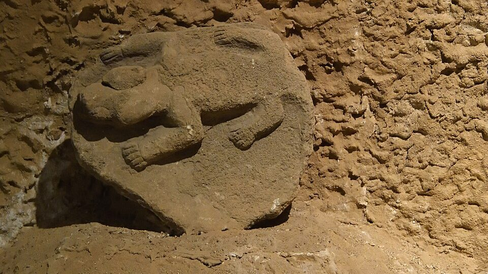
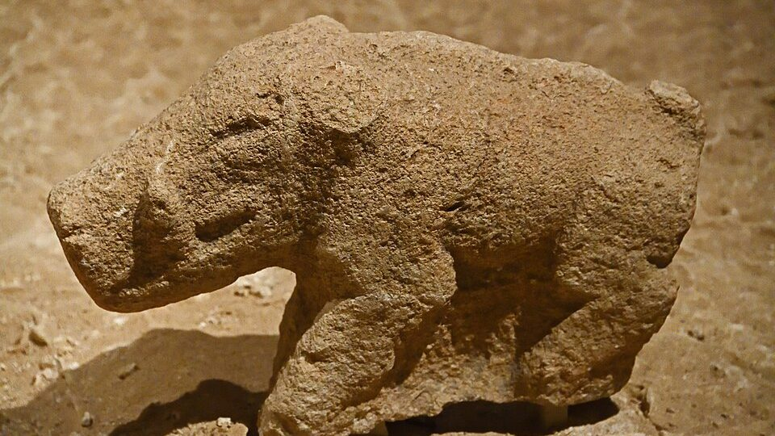
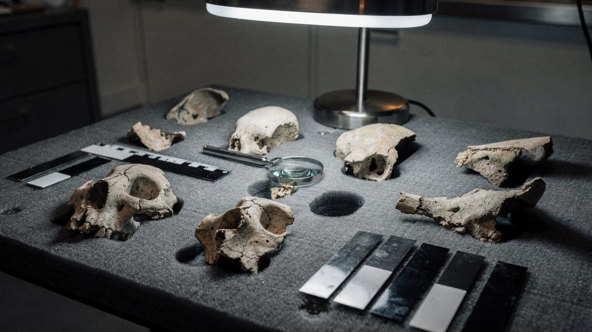
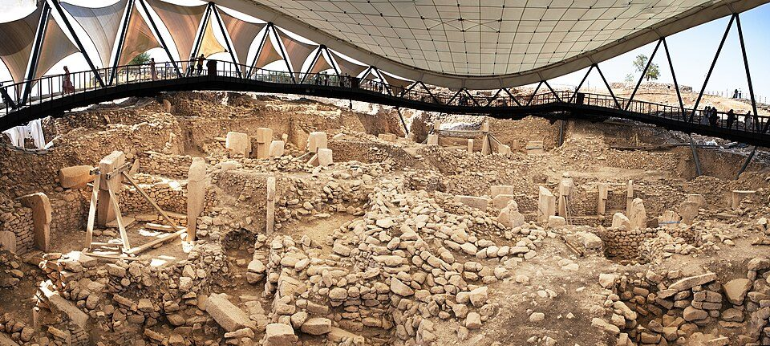

Göbekli Tepe — o templo enterrado de propósito
Caçadores-coletores ergueram pilares de calcário de cinco metros e meio no alto de uma colina do sudeste da Turquia. Séculos depois, os recintos desapareceram sob toneladas de entulho. A pergunta que a arqueologia ainda não resolveu não é quem construiu — é por que tudo foi coberto.
- Local
- Şanlıurfa, Turquia
- Coordenadas
- 37°13′25″N 38°55′18″E
- Período
- c. 9600 – 8200 a.C.
- Escavado
- ≈ 10% do sítio
- Patrimônio
- UNESCO, 2018
- Status
- Escavação ativa
No verão, o vento que sobe da planície de Harran chega seco à colina e carrega calcário moído. A elevação não impressiona de longe: quinze metros de altura sobre um platô já alto, o formato arredondado que deu o nome turco ao lugar — göbekli tepe, a colina com barriga. Não há rio ao lado, nem sombra, nem nada que recomende o alto do morro a quem precise viver dali. As nascentes do Balikh, afluente do Eufrates, ficam abaixo. Quem subisse até ali, há onze mil e seiscentos anos, subia por outro motivo.
O que esse alguém encontrou no topo foram anéis de pedra. Recintos circulares e ovais, entre dez e trinta metros de diâmetro, delimitados por muros baixos e bancos de pedra. Cravados nesses muros, pilares de calcário em forma de T. No centro de cada recinto, um par maior, mais alto que qualquer homem, os dois voltados um para o outro. Nas faces dos pilares, em baixo-relevo: raposas de dentes à mostra, javalis, touros, escorpiões, cobras descendo em fila, aves de pescoço longo. Alguns pilares têm braços esculpidos nas laterais, mãos que se encontram sobre o ventre, cinto, tanga. São corpos. Corpos sem cabeça, de pedra, em pé, em círculo, no alto de uma colina sem água.
Nada disso deveria existir. Não naquela data.
01A colina que passou por cemitério
Göbekli Tepe foi registrada pela primeira vez em 1963, num levantamento conduzido por Halet Çambel, da Universidade de Istambul, e Robert Braidwood, da Universidade de Chicago. As equipes anotaram a presença de lajes de calcário quebradas espalhadas pela superfície e seguiram adiante. A leitura foi razoável para o que se via: pareciam lápides. A colina entrou nos cadernos como um cemitério medieval de pouco interesse e permaneceu assim por três décadas.

Em 1994, o arqueólogo alemão Klaus Schmidt, do Instituto Arqueológico Alemão, releu aquelas anotações enquanto procurava um sítio para escavar na região. A descrição das lajes não fechava com um cemitério: o volume de calcário trabalhado era grande demais, e a pedra tinha marcas de talhe. Schmidt foi ao local. Reconheceu, na superfície, topos de pilares ainda enterrados. No ano seguinte começou a escavar, e continuaria ali até morrer, em 2014.

A primeira datação por radiocarbono desmontou a cronologia que os manuais traziam. As camadas mais antigas do sítio pertencem ao Neolítico Pré-Cerâmico A, por volta de 9500 a.C. A inscrição da UNESCO, em 2018, fixa a ocupação entre aproximadamente 9600 e 8200 a.C. Isso coloca os pilares cerca de seis mil anos antes de Stonehenge e das pirâmides de Gizé, e — este é o ponto que desestabilizou a arqueologia do Próximo Oriente — antes da agricultura, antes da cerâmica, antes da roda, antes da escrita e antes de qualquer cidade.
Primeiro veio o templo, depois a cidade. Síntese atribuída a Klaus Schmidt sobre a inversão que o sítio propõe
A frase resume a inversão. O modelo clássico dizia que a agricultura vem primeiro: gente sedentária, excedente de alimento, população concentrada, hierarquia e, no fim dessa cadeia, monumentos religiosos. Göbekli Tepe apresenta a ordem contrária. Os ossos encontrados no sítio são de animais caçados — gazelas, javalis, cervos, aves selvagens. Nenhum rebanho. Os cereais processados ali eram silvestres. As pessoas que ergueram aqueles pilares ainda não plantavam. E, no entanto, moveram e levantaram pedras de várias toneladas.
02O que está efetivamente no chão
Convém separar o que foi escavado do que foi inferido, porque grande parte do que circula sobre Göbekli Tepe confunde as duas coisas.
Quatro recintos monumentais foram escavados. Levantamentos geofísicos — radar de penetração e magnetometria — indicam pelo menos outros vinte ainda enterrados, com até oito pilares cada, o que projeta algo próximo de duzentos pilares no conjunto. Em 2021, a direção da escavação estimava que cerca de 10% do sítio havia sido aberto. Os outros 90% são, por ora, leitura de instrumento.

O repertório gravado
Os relevos não são decorativos no sentido moderno. Repetem um repertório fechado e desequilibrado: predadores e animais perigosos aparecem muito mais do que presas. Leões, javalis, escorpiões, aranhas, cobras e abutres dominam as faces. Símbolos abstratos — o sinal em H, crescentes, discos — reaparecem em pilares diferentes e em sítios diferentes da mesma região, o que sugere um sistema de convenções compartilhado, ainda que ilegível para nós.

Em 2023, a escavação recuperou no Recinto D uma escultura de calcário em tamanho natural de um javali, com resíduos de pigmento vermelho, branco e preto ainda aderidos à pedra — a primeira estátua neolítica com pintura preservada de que se tem notícia. A peça estava apoiada sobre um banco decorado com um símbolo em H, um crescente, duas cobras e três rostos ou máscaras humanas. É uma informação com consequência: significa que o que hoje vemos como pedra cinzenta era, originalmente, colorido.

Há também ossos humanos. Em 2017, fragmentos de crânios com incisões deliberadas foram publicados e interpretados como indício de um culto ao crânio — prática documentada em outros sítios do Neolítico levantino, como Jericó e Tell Aswad, e mais tarde em Çatalhöyük. Não foram encontrados sepultamentos formais nos recintos escavados até agora.

03O sepultamento — e a dúvida sobre ele
Aqui está o nó do dossiê. Os recintos de Göbekli Tepe não ruíram: eles foram encontrados cheios. Até o topo dos pilares, preenchidos por uma massa de sedimento, lascas de calcário, ossos de animais, sílex trabalhado e vasos de pedra quebrados. Foi essa cobertura que preservou os relevos durante onze milênios — e é ela que gera a pergunta mais difícil do sítio.

Schmidt interpretou esse preenchimento como intencional. O argumento é de composição e de ritmo: o material não é solo homogêneo, como seria um depósito formado por acumulação lenta, e sim uma mistura heterogênea de refugo e pedra que a estratigrafia sugere ter sido depositada em episódios concentrados. A leitura que se consolidou a partir daí é a do descomissionamento ritual — cada recinto teria sido encerrado, sepultado e substituído por outro ao fim de um ciclo de uso.
Essa continua sendo a interpretação mais aceita, mas deixou de ser consensual. Trabalhos geoarqueológicos mais recentes levantam a possibilidade de que parte do preenchimento tenha origem natural: material carreado de encosta acima, enxurrada, colapso progressivo das paredes. A colina é inclinada, o entorno é de calcário friável e onze mil anos são tempo suficiente para mover muita coisa. A hipótese não substituiu a anterior; convive com ela. E é possível que ambas estejam parcialmente certas — recintos diferentes podem ter tido destinos diferentes.
04As teorias, da mais sóbria à mais improvável
Centro cerimonial de caçadores-coletores
A leitura original de Schmidt: um santuário de topo de colina, erguido e frequentado por grupos que viviam em outro lugar e se reuniam ali periodicamente para construir, celebrar e banquetear. Sustenta-se na escala monumental, na iconografia, nos vasos de calcário de grande volume e nos depósitos de ossos compatíveis com festins coletivos.
Povoado com arquitetura comunal — e não só um templo
A revisão que ganhou força depois de 2014. O arqueólogo Ted Banning havia questionado, já em 2011, se as categorias modernas de “sagrado” e “profano” fazem sentido para sociedades neolíticas, propondo que os recintos pudessem ser casas ricamente decoradas. As escavações posteriores reforçaram essa direção: estruturas domésticas, mais de sete mil pedras de moagem, processamento intensivo de cereais silvestres, cisternas de captação de água. Hoje a formulação dominante é de convivência — funções rituais e cotidianas no mesmo espaço, sem a fronteira que nós projetamos.
A obra exigiu uma sociedade hierarquizada
Schmidt sustentava que mover e erguer aqueles pilares demandava centenas de trabalhadores coordenados — e, portanto, alguma forma de autoridade capaz de coordená-los. Experimentos de arqueologia experimental contestam a escala: há estimativas de que entre doze e vinte e quatro pessoas dariam conta de todas as estruturas expostas do Neolítico Pré-Cerâmico B em menos de quatro meses, o que caberia numa família extensa ou numa pequena comunidade.
A disputa não é sobre a pedra, é sobre a sociedade: quanto de estrutura política é necessário para produzir um monumento.
O calendário solar do Pilar 43
Em julho de 2024, Martin Sweatman, da Universidade de Edimburgo, publicou no periódico Time and Mind uma leitura do Pilar 43 do Recinto D — a chamada Pedra do Abutre — segundo a qual cada marca em V gravada na peça representaria um dia, somando 365: doze meses lunares mais onze dias. Seria o registro de calendário mais antigo já identificado. Sweatman associa o conjunto ao impacto de fragmentos de cometa por volta de 10.850 a.C., evento que estaria na origem do Dryas Recente.
A interpretação circula bem fora da arqueologia e mal dentro dela. Dois problemas são estruturais: o repertório de símbolos do sítio é recorrente e aparece em contextos onde a leitura calendárica não se aplica, o que enfraquece a atribuição de valor numérico às marcas; e há um intervalo de aproximadamente mil e duzentos anos entre a data proposta para o evento e a construção do recinto, o que exigiria uma transmissão oral precisa por dezenas de gerações. Nenhuma das duas objeções é fatal — mas nenhuma foi respondida.
Civilização perdida, visitantes externos, tecnologia esquecida
A tese de que Göbekli Tepe seria herança de uma civilização avançada anterior — ou de algo não humano — apoia-se inteiramente num argumento de incredulidade: a suposição de que caçadores-coletores não seriam capazes daquilo. O sítio responde a essa objeção sozinho. As pedreiras estão a cem metros. Um pilar inacabado continua deitado no leito de rocha, com as marcas de percussão visíveis. As ferramentas líticas usadas no talhe foram recuperadas. Não há um único artefato de metal, nenhum traço de corte mecanizado, nenhuma anomalia de material.
O que o sítio de fato derruba não é a capacidade humana — é a nossa estimativa dela. Essa é a descoberta, e ela é mais interessante do que qualquer substituto.
05Cronologia
- c. 9600 a.C. Início da ocupação registrada. Erguem-se os primeiros recintos com pilares em T, no Neolítico Pré-Cerâmico A.
- c. 8800 – 8200 a.C. Fase seguinte, do Neolítico Pré-Cerâmico B. As estruturas tornam-se menores e progressivamente retangulares; a construção monumental cessa.
- c. 8200 a.C. Abandono do sítio. Os recintos já estão preenchidos — por deposição humana, por processo natural, ou por ambos.
- 1963 Levantamento de Halet Çambel e Robert Braidwood registra lajes de calcário na superfície. O lugar é catalogado como cemitério medieval.
- 1994 – 1995 Klaus Schmidt relê as anotações do levantamento, visita a colina e inicia a escavação sistemática.
- 2014 Morte de Schmidt. A direção do projeto passa por transição e a interpretação do sítio começa a ser revista.
- 2017 Publicação dos fragmentos de crânio com incisões deliberadas, base da hipótese de um culto ao crânio.
- 2018 Inscrição na lista do Patrimônio Mundial da UNESCO, sob os critérios (i), (ii) e (iv).
- 2021 Necmi Karul, da Universidade de Istambul, assume a direção do projeto conjunto com o Museu de Şanlıurfa e o Instituto Arqueológico Alemão, no âmbito do programa regional Taş Tepeler.
- 2023 Escultura de javali em tamanho natural, com pigmento vermelho, branco e preto preservado, é recuperada no Recinto D — a primeira estátua neolítica pintada conhecida.
- 2024 Publicação da hipótese do calendário solar do Pilar 43, em Time and Mind. Recepção ampla fora da arqueologia, reservada dentro dela.
06O que continua em aberto
Göbekli Tepe deixou de ser um caso isolado. O programa Taş Tepeler — “as colinas de pedra” — investiga hoje uma dezena de sítios contemporâneos espalhados pela mesma região de Şanlıurfa, entre eles Karahan Tepe, Sefer Tepe e Taşlı Tepe, todos com a mesma gramática de pilares em T. O que parecia um evento único revelou-se um fenômeno regional. Isso resolve uma pergunta — não era uma anomalia — e abre outra: havia ali, no décimo milênio antes de Cristo, uma rede de comunidades partilhando arquitetura, símbolos e provavelmente crenças, numa escala que não sabemos descrever.
Três perguntas permanecem sem resposta, e não por falta de tecnologia:
O que os pilares centrais representam. Os braços, as mãos sobre o ventre, o cinto e a tanga indicam figuras antropomórficas. A ausência sistemática de cabeça pode ser convenção estilística, pode ser representação de ancestrais, pode ser algo para o qual não temos conceito. Não há texto, não há analogia etnográfica direta.
Por que os recintos foram cobertos. A disputa entre sepultamento ritual e preenchimento natural só se resolve com geoarqueologia fina aplicada recinto a recinto — e 90% do sítio continua fechado.
Qual é a relação com o nascimento da agricultura. A proximidade com Karacadağ é sugestiva, a coincidência temporal é real, e a direção da causalidade permanece indeterminada. Não se sabe se a necessidade de alimentar quem construía puxou o cultivo, se o cultivo liberou o tempo para construir, ou se as duas coisas cresceram juntas sem que uma tenha causado a outra.
A escavação avança devagar por decisão deliberada: a direção atual prefere preservar a maior parte do sítio para métodos que ainda não existem, em vez de abrir tudo com os de hoje. É uma escolha incomum e, provavelmente, correta. Significa que a resposta para a pergunta do título deste dossiê está fisicamente ali, sob a colina, a poucos metros de profundidade — e que a decisão consciente é não ir buscá-la ainda.
07Fontes consultadas
Este dossiê é texto autoral. As fontes abaixo foram consultadas para apuração de datas, medidas e atribuições; nenhuma foi reproduzida.
- UNESCO, Centro do Patrimônio Mundial — ficha oficial de inscrição de Göbekli Tepe (ref. 1572, 2018).
- Verbete enciclopédico consolidado sobre Göbekli Tepe — cronologia, levantamentos geofísicos, histórico de direção da escavação.
- Sweatman, M. B. — artigo sobre a interpretação calendárica do Pilar 43, Time and Mind, julho de 2024 (DOI 10.1080/1751696X.2024.2373876).
- Cobertura técnica da escultura de javali pintada recuperada no Recinto D (2023) e das peças associadas de Karahan Tepe.
- Literatura de divulgação especializada sobre o debate santuário × povoado, incluindo a crítica de T. Banning (2011) às categorias sagrado/profano.
- Material de referência do programa Taş Tepeler sobre o preenchimento dos recintos e as hipóteses de deposição.